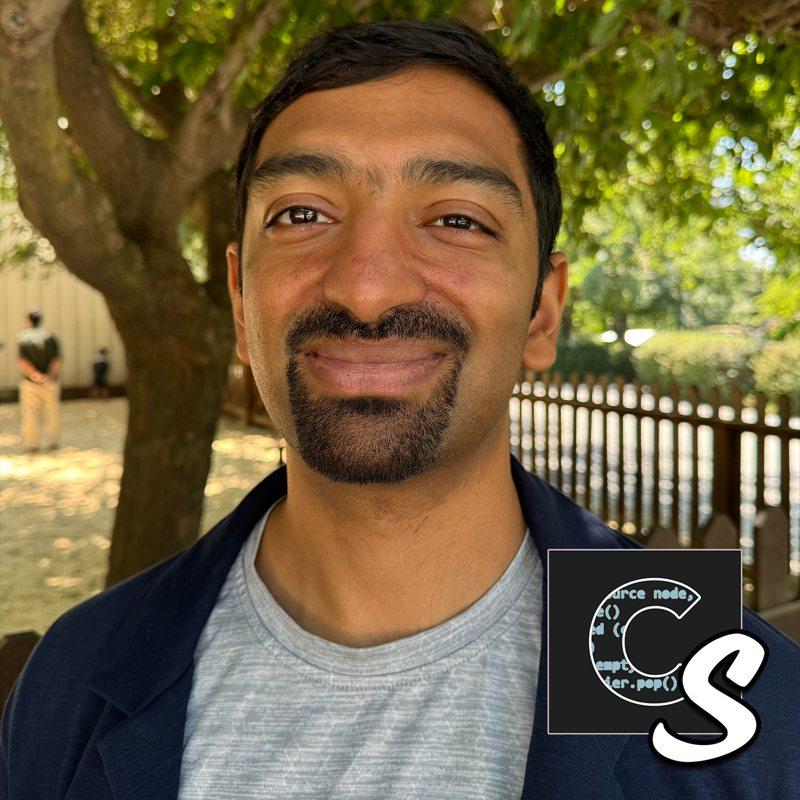
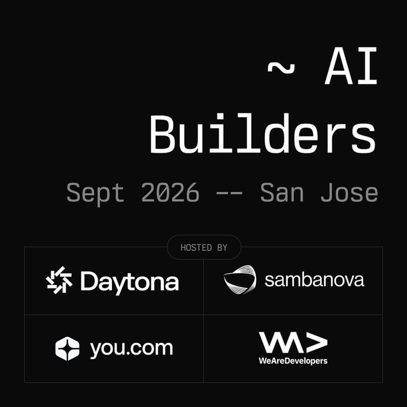
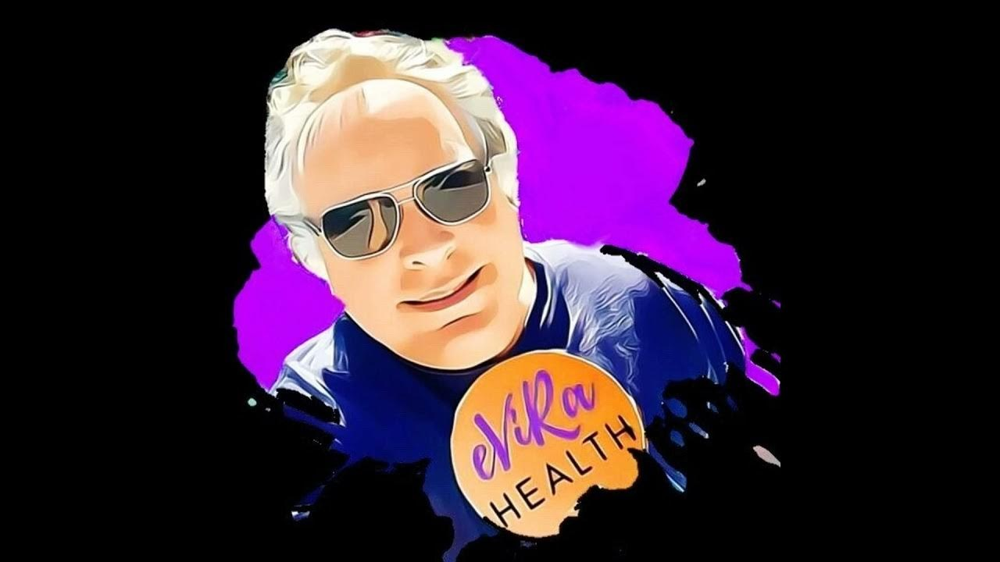
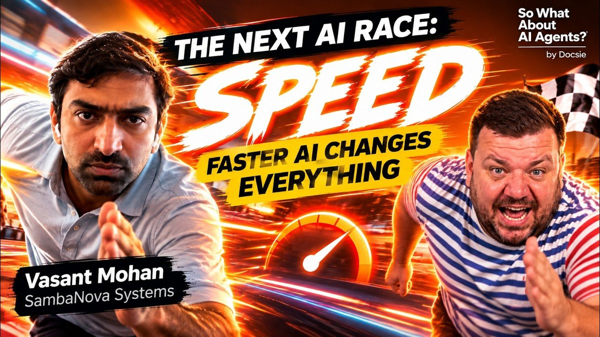

Listen ↗
Podcast guest · Code Story · September 24, 2026
A conversation with Noah Labhart about the infrastructure behind agentic workloads, including inference latency and hardware choices.
Listen on Code Story ↗

Speaker · Daytona & SambaNova AI Builders · September 23, 2026
A San Jose lightning talk on how matching GPUs, RDUs, and CPUs to different parts of an agent workflow can keep its reasoning and tool-use loops responsive.
Event agenda ↗
From the event on LinkedIn

Watch ↗
Podcast guest · What's Up with Tech? · September 18, 2026
A conversation with Evan Kirstel on the cost of enterprise AI agents, inference hardware, and disaggregated inference.

Watch ↗
Podcast guest · So What About AI Agents · September 15, 2026
A conversation with Philippe Trounev on how agentic workflows change the need for inference speed, from prefill and decode to hardware tradeoffs.
Watch ↗
Speaker · AI By the Bay · 2025
A recorded talk on why agentic workloads change the hardware conversation.
Watch ↗
Speaker · Hacking Agents
A recorded talk on the relationship between inference speed and agentic AI.